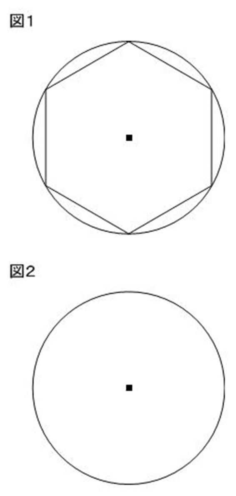
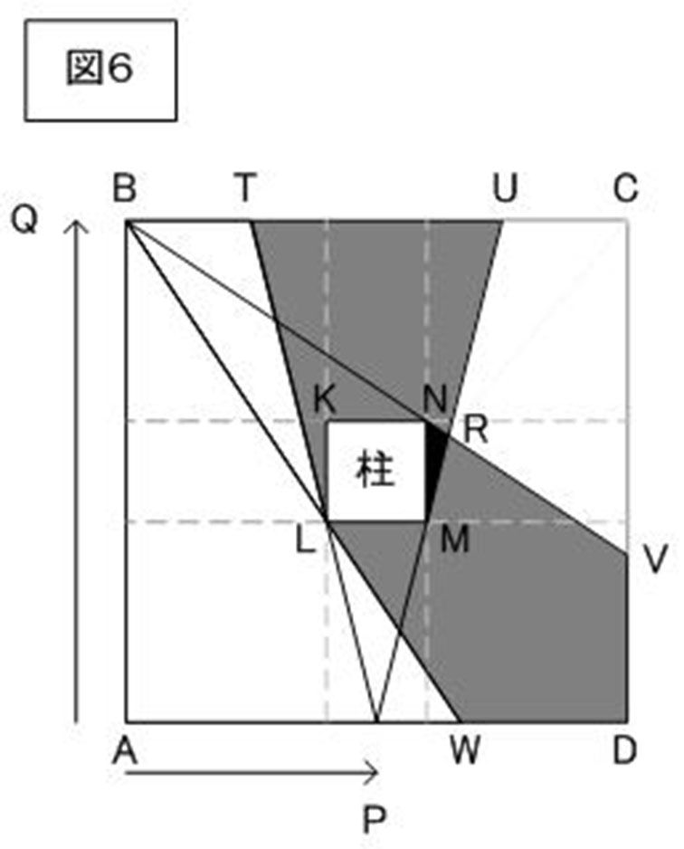
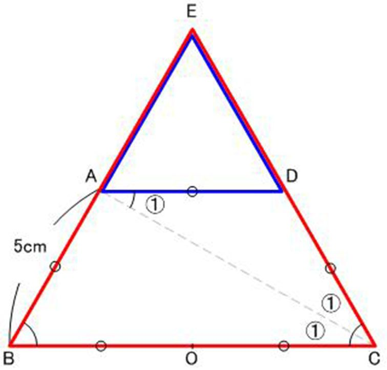
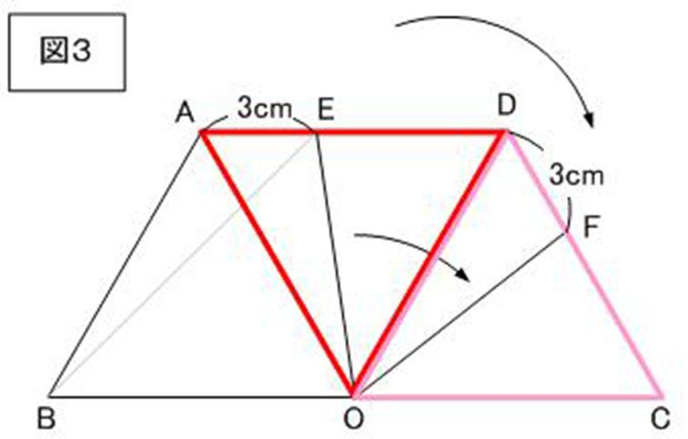

| 難解算数問題 50問の解法集 その２: 難解算数問題集 難解問題集 (ヴィーマジック ブック) | |
| Unknown | |
| Vimagic (2015) | |
Q1 六角形→三角すい
問題
図のような六角形ＡＢＣＤＥＦがあり、辺の長さはすべて６ｃｍです。
このとき、次の問に答えなさい。
（１）三角形ＡＢＣの面積と三角形ＡＢＦの面積を答えなさい。
（２）三角形ＡＣＥの面積と三角形ＢＤＦの面積の差を答えなさい。
（３）ＡＣ，ＣＥ，ＥＡを折り目として六角形ＡＢＣＤＥＦを折ると、 ある立体図形ができます。その体積を答えなさい。
ただし、角すいの体積は、底面積×高さ÷３で求められるものと します。
Q2 速さと比
問題
兄と妹は池の周りをＡ地点から同時に反対方向にまわり始めました。
兄は自転車で、妹は犬をだいて歩きました。途中で犬は妹からはなれて走り出し、その１分後に兄と犬は出会いました。
出会った場所は兄が１周の５分の３進んだＢ地点です。
兄の自転車の速さ、妹の歩く速さ、犬の走る速さの比は、４：２：５です。
兄がＢ地点についたのは、出発してから何分何秒後ですか。
Q3 平面図形の面積
問題
四角形ＡＢＣＤは縦８ｃｍ、横１０ｃｍの長方形で、点Ｇは辺ＢＣ上の点です。
台形ＡＢＧＦの面積は台形ＣＤＦＧの面積の１２/１３倍です。
また、三角形ＡＢＨは、ＡＨとＢＨの長さが等しい三角形で、その面積は三角形ＥＦＧの面積の３/２倍です。
このとき、次の各問に答えなさい。
Q5 カエルの数は？
問題
葉Ａ，Ｂ，Ｃにいるカエルは１秒ごとに次のように移動します。
★葉Ａにいるカエルは、半分が葉Ｂへ、半分が葉Ｃへ移動します。
★葉Ｂにいるカエルは、１/３が葉Ａへ、１/３が葉Ｃへ、１/３が池へ 飛び込み、戻ってきません。
★葉Ｃにいるカエルは、１/３が葉Ａへ、１/３が葉Ｂへ、１/３が 移動せず葉Ｃにとどまります。
今、カエルが葉Ａに１０８匹いて、葉Ｂ，Ｃにはいないとき、４秒後に葉Ｃにいるカエルは何匹か答えなさい。
Q8 回転する図形
問題
半径の長さが等しく、中心角が１２０°と９０°の２つのおうぎ形があり、点Ｏを中心として図の矢印の向きに回転します。
それぞれのおうぎ形は、点Ａ，Ｂが重なった状態から回りはじめ、１２０°のおうぎ形は４０秒間で１回転、９０°のおうぎ形は６０秒間で１回転します。
（１）回りはじめてから５分間で点ＡとＢが回りはじめた点以外の場所で重なるのは何回ありますか。
（２）２つのおうぎ形が重なっている部分のおうぎ形の中心角を a°とします。回りはじめてからの時間と a の関係を示す
グラフを描きなさい。
Q9 平行六辺形
問題
上の図の六角形の向かい合った辺は３組とも平行で、３組それぞれについて、短い辺と長い辺の長さの比が１：３ となっています。
色のついた部分の面積は、六角形の面積の何倍か答えなさい。
Q11 正方形の組み合わせ
問題
下の図の四角形ＡＢＣＤは面積が９ｃ㎡の正方形です。
四角形ＥＦＧＨも正方形で、四角形ＡＢＣＤの各辺を３等分する点と図のように交わっています。
このとき、次の問に答えなさい。
（１）図１の色のついた部分の面積を答えなさい。
（２）図２の色のついた部分の面積を答えなさい。
Q12 魔方陣
問題
下の図の丸の中に、１から７までの数字を、どれも必ず１回使い、直線で結ばれた３つの数の和がどれも同じになるように入れます。
（１）３つの数の和はいくらか答えなさい。
（２）図を満たす数字の組み合わせは何通りありますか。
Q13 平面図形の角度＆面積比
問題
下図のような直角三角形ＡＢＣがあります。ＡＥを折り目として
三角形を折ると、辺ＡＢは辺ＡＣと重なり、ＣＤを折り目として三角形
を折ると、辺ＢＣは辺ＡＣと重なり、頂点Ｂは点Ｆと重なります。
このとき、次の問に答えなさい。
（１）角①（角ＡＨＤ）の大きさを求めなさい。
（２）三角形ＡＧＦの面積は、三角形ＡＢＣの面積の何倍か 求めなさい。
Q14 方眼紙上の図形
問題
１辺１０ｃｍの方眼紙に、図のように１ｃｍごとに点を描きました。
（１）図１の正方形ＡＢＣＤの面積を求めなさい。
（２）図２に、面積が２９ｃ㎡ となるように正方形ＰＱＲＳを１つ
描き込みなさい。ただし、頂点は必ず方眼紙の点の上に くるようにしなさい。
（３）（２）の正方形ＰＱＲＳは、何通り描くことができますか。
Q15 記号×数の性質×場合の数
問題
数字の「１」と「２」だけを使って、２つの４けたの整数を作ります。
作った２つの整数を、それぞれの同じけたにある数字同士をかけることを、「Ｘ＊Ｙ」で表すことにします。
たとえば、１２２１＊２２２２＝２４４２ 、 ２２２１＊１１２１＝２２４１となります。
このとき、次の問に答えなさい。
（１）作ることができる４けたの整数は何個ありますか。
（２）Ｘ＊１１１１ を計算したところ、３の倍数になりました。
このとき、Ｘとして考えられるものを全て書きなさい。
（３）1212＊Ｙ を計算したところ、３の倍数になりました。
このとき、Ｙとして考えられるものを全て書きなさい。
（４）１１１１、１２１２、Ｘ、Ｙ の４つの４けたの整数から
２つを選んで「＊」を用いた計算をしたところ、 どの計算結果も３の倍数になりました。
Ｘ，Ｙとして考えられる組み合わせを全て書きなさい。
ただし、ＸよりもＹの方が大きい整数とします。
Q16 円周率とは
問題
（１）円周率とは、円の[ ① ] が [ ② ] の何倍であるか について表したものです。①と②に適切な言葉を入れなさい。

（２）図１の、円の内側に接している正六角形の図を用いて、 円周率が３より大きいことを説明しなさい。
（３）図２の円の用いて、円周率が４より小さいことを説明しなさい。
Q18 等脚台形の角度
問題
図のように長方形と台形の１つの辺がぴったり重なるようにしました。
図の①、②の角度を求めなさい。ただし、同じ印がついている辺は同じ長さであることを示しています。
Q19 等脚台形を利用した図形の回転
問題
下の図のような台形ＡＢＣＤがあります。
同じ印のある辺の長さは等しいものとして、次の問に答えなさい。
（１）三角形ＯＢＥを、点Ｏを中心にして、点Ｅ が辺ＣＤ上に初めて重なるまで時計回りに回転させました。このとき、四角形ＡＢＯＥのうち、三角形ＯＢＥが通らなかった部分を図に示しなさい。
（２）（１）の部分の面積は、三角形ＯＢＥの面積の何倍ですか。
（３）ＯＥ の長さを求めなさい。
Q21 乗車率
問題
電車の座席数に対する乗客数を百分率で表したものを乗車率といいます。
たとえば、座席数６００の電車に９００人が乗車しているとき、その電車の乗車率は１５０％です。
次の問に答えなさい。
（１）乗車率１２０％の電車から乗客の１５％が降りると、乗車率は何％になりますか。
（２）乗車率１１７％の電車に、無人の客車をつないで座席を８０増やすと乗車率は１０５％になりました。このとき乗客は何人 いますか。
（３）乗車率９５％の電車に、無人の客車をつないで座席を８０増やし、２２９人がさらに乗ると乗車率が１１０％になりました。
客車をつなぐ前の電車の座席数はいくらですか。
Q22 お菓子の詰め合わせ
問題
ガム、キャラメル、チョコレートがそれぞれたくさんあります。
この中から１０個選び、袋に入れてお菓子の「つめ合わせ袋」を作ろうと思います。
どのお菓子も必ず２個以上入れるとすると、異なる「つめ合わせ袋」は何種類ありますか。
Q23 こぼれた水の体積
問題
半径３ｃｍ、高さ１０ｃｍのふたのない円柱の容器があり、高さ８ｃｍまで水が入っています。
容器を４５度傾けて元に戻すとき、こぼれた水の体積は何ｃm3 か求めなさい。
Q24 図形の移動
問題
半径３ｃｍ、中心角６０度の扇形ＡＢＣの１辺が長方形に接しています。
長方形のＤＥの長さは６ｃｍ、ＥＦの長さは扇形ＡＢＣの弧の長さと等しくなっています。
扇形がすべることなく長方形の周りを時計回りに移動して１周するとき、次の問に答えなさい。
（１）扇形が通った部分を図示しなさい。
（２）（１）で図示した部分の面積は、扇形ＡＢＣと三角形ＡＢＣの 何個分の面積と等しくなるか答えなさい。
Q25 図形の組みかえ
問題
上の図の長方形は、横５ｃｍでたてに長くなっております。
この長方形を①、②、③、④の部分に分けて組み立て直すと右の図のような正方形になります。
このとき、長方形の面積を答えなさい。
Q26 周期算
問題
図のようなスイッチがあり、スイッチを入れるとＡ，Ｂ，Ｃ，Ｄのライトが同時に光ります。
その後、Ａは１秒ごと、Ｂは２秒ごと、Ｃは４秒ごと、Ｄは８秒後ごとに光ったり消えたりします。
たとえばＤはスイッチを入れると８秒間光り、その後８秒間は消え、再び８秒間光る、ということをくり返します。
このとき次の問に答えなさい。
（１）スイッチを入れてから、初めて４つのライトが全て消えて いるのは何秒後から何秒後までですか。
（２）スイッチを入れてから１分間に、２つのライトだけが光るのは
合計何秒ありますか。
Q27 図形の重なった部分の面積
問題
１辺７ｃｍの正方形の方眼紙があります。
これから等しい辺の長さが３ｃｍの直角二等辺三角形を２つ取り除くと、図１のような六角形ＡＢＣＤＥＦ ができます。
図１の六角形ＡＢＣＤＥＦ の赤くぬられた１辺１ｃｍの正方形を、「六角形のまん中の正方形」と呼ぶことにします。
次に、１辺９ｃｍの正方形の方眼紙を用意します。
この方眼紙のマス目と六角形ＡＢＣＤＥＦのまん中の正方形がぴったり重なるように図２のように重ね、重なった部分を灰色にぬります。
六角形のまん中の正方形が方眼紙からはみ出すことのないように六角形を動かすとき、次の問に答えなさい。
（１）六角形のまん中の正方形が、図２の緑のマス目にあるとき、 灰色の部分の面積を答えなさい。
（２）灰色の部分の面積が最大になるとき、その面積を答えなさい。
また、そうなるような六角形の置き方は何通りありますか。
（３）灰色の部分の面積が最小になるとき、その面積を答えなさい。 また、そうなるような六角形の置き方は何通りありますか。
（４）六角形のまん中の正方形が、図２の青いマス目にあるとき、 灰色の部分の面積を答えなさい。
また、このときと灰色の部分の面積が同じになるように六角形のまん中の正方形を 置けるマス目を、すべて青くぬって表しなさい。
Q30 フラクタル図形
問題
面積が４３７４ｃ㎡ の正三角形があります。
正三角形の各辺を３等分して、まん中の部分にその長さを１辺とする正三角形を
つなぐと図１のような図形になります。
図１の図形の各辺を３等分して、同様にまん中の部分に同じ長さの正三角形をつなぐと図２のような図形になります。
このような作業をくり返すとき、次の問に答えなさい。
（１）図１の図形の面積を答えなさい。
（２）図２の図形の面積を答えなさい。
（３）図２の図形から、同様の作業を２回した後の図形の面積を答えなさい。
Q32 影の移動
問題
（１）下の図３のようにＥ，Ｆ，Ｇ，Ｈをとると、三角形ＡＥＦと三角形ＥＧＨは相似です。
ＡＦ＝８ｍ、ＥＦ＝ＥＨ＝２ｍ より、ＧＨ＝０．５ｍ とわかり、三角形ＥＧＨの面積＝２×０．５÷２＝０．５㎡ となります。
（２）見えない部分は下の図４の灰色の部分になります。
この部分の面積＝正方形ＡＢＣＤの面積－（三角形ＡＢＪの面積×２＋四角形ＡＫＮＭの面積）
三角形ＡＢＪは三角形ＡＩＫと相似で、相似比は６：１０＝３：５ より、ＢＪの長さ＝４÷３×５＝２０/３ （ｍ） と求められます。
よって三角形ＡＢＪの面積＝１０×２０/３ ÷２＝１００/３ ㎡ です。
次に、四角形ＡＫＮＭ＝三角形ＡＫＮ＋三角形ＡＭＮなので、四角形ＡＫＮＭの面積＝２×４÷２×２＝８㎡ です。
以上より、求める部分の面積は、
１０×１０－（１００/３ ×２＋８）＝７６/３＝２５と１/３ （㎡）です。
（３）Ｐ君がＡからＤへ移動するときに、一度も見ることのできない部分は、下の図５の黒い部分となります。
求める部分：三角形ＫＮＲは、三角形ＪＯＲと相似です。
（２）より、ＢＪ＝２０/３ ｍ なので、ＤＯ＝２０/３ ｍ です。
よって、ＪＯの長さ＝２０/３ ×２－１０＝１０/３ ｍ とわかり、
ＪＯ：ＫＮ＝１０/３：２＝１０：６＝５：３ の比となります。
ＢＩ＝４ｍ なので、三角形ＫＮＲの高さは、４÷（５＋３）×３＝１．５ｍ と求められ、
三角形ＫＮＲの面積＝２×１．５÷２＝１．５㎡ となります。
なお、三角形ＫＮＲと三角形ＡＤＲの相似を利用してもよいでしょう。
（４）部屋の１周は１０×４＝４０ｍ あるので、４０秒間について調べればよいことになります。
最初は図４の灰色の部分が共通して見えない部分です。
これがどのように動いていくか考えます。
Ｐ君から柱の角を結んだ線を、それぞれＰＴ、ＰＵ
Ｑ君から柱の角を結んだ線を、それぞれＱＶ、ＱＷ とすると、
まず、Ｑ君がＢに到達したところまでは、下の図６のように三角形ＮＭＲのように共通して見えない部分があります。

この共通部分がなくなるのは、下の図７のように、Ｐ君が６ｍ進んだときです。（６秒後）
共通して見えない部分がないのは、Ｑ君が１４ｍ進んだときで、下の図の８のようになるときです。（７秒後）
Ｑ君が図８よりＣの方へ移動すると、ＫＬを底辺として、共通して見えない部分ができ始めます。
この見えない部分は、Ｑ君がＣに移動したとき（Ｐ君はＤ）も存在し、Ｑ君がＣＤ上を移動して、Ｄへ移動しても、Ｐ君もＣＤ上にいるので、存在したままとなります。
Ｐ君がＣに着くまで、Ｑ君はＡＤ上を移動しますので、見えない部分がなくなるのは、下の図９の状態になってからです。
Q33 ２進法
問題
数字の１と２だけを使って整数を作り、小さい方から並べます。
１，２，１１，１２，２１，２２，１１１・・・
このとき、次の問に答えなさい。
（１）１１２２２ は小さい方から数えて何番目ですか。
（２）作られた１１１１１から２２２２２までの５けたの整数を全て 足すといくらですか。
Q34 箱の組み立て
問題
１辺１２ｃｍの正方形の紙があります。この紙の四隅（よすみ）からハサミで同じ大きさの正方形を切り取り、残った紙を組み立てると、ふたのない直方体の容器ができます。
このとき次の問に答えなさい。
（１）切り取る紙の１辺を３ｃｍとしたとき、できる立体の体積を 答えなさい。
（２）できる立体が立方体のとき、その体積を答えなさい。
Q35 ６進法
問題
マス目が描かれた同じプリントが２枚以上あります。２から７までの６種類の数字を使ってできる整数２，３，４，５，６，７，２２・・・を
小さい順に１マスずつ、次の操作に従って書き込んでいきます。
操作①：どの行も左から右に書く。
操作②：最後の列まで書き込み終わったら、次の行に書く。
操作③：最後の行まで書き込み終わったら、次のプリントに書く。
このようにして、すべてのプリントのすべてのマスに整数を書きました。
最後に書いた整数は「２７４６」でした。 このとき、
次の問に答えなさい。
（１）２けたの整数は何個書き込まれていますか。
（２）書き込んだ整数は、全部で何個ですか。
（３）１枚目の紙の６行目の８列目の整数を答えなさい。
Q37 移動速度
問題
Ａ地点からＢ地点へ移動します。道のりの８分の１を進んだとき、予定していた時間の５分の１が経過していました。
予定していた時間にＢ地点に到着するには、それまでの速さの何倍の速さで移動すればよいですか。
Q38 回転体の体積
問題
下の図を見て、次の問に答えなさい。
（１）八角形ＡＢＣＤＥＦＧＨの面積を求めなさい。
（２）ＢＨの長さを求めなさい。
（３）八角形ＡＢＣＤＥＦＧＨを直線ＰＲのまわりに１回転させてできる立体の体積を求めなさい。
Q40 不定不等式
問題
１本のひもがあって、とちゅうに結び目が１か所あります。
このひもを５等分すると、結び目は左から２本目の部分にあり、８等分すると、結び目は左から４本目の部分にありました。
結び目が切ったはしになることはないものとすると、このひもを３０等分すると、結び目は左から何本目のところにありますか。
Q41 立体図形の組み立て条件
問題
上の図のように、長方形の一部を対角線に沿って切り取ったものを折ると、三角すいができる場合と、できない場合があります。
三角すいを作るには、ＡＢの長さをどのようにするとよいか答えなさい。
Q42 流水算
問題
２１ｋｍはなれた川のＡ地点とＢ地点を船で往復しました。
ＡからＢへ上るときは２時間６分かかり、ＢからＡへ下るときは、
川の流れが１時間あたり１．４ｋｍ速くなっていたので、１時間１５分ですみました。次の問に答えなさい。
（１）水の流れがないとき、この船の速さは時速何ｋｍですか。
（２）ＢからＡへ下るときの川の流れが、もし上りのときより１時間あたり０．４ｋｍおそくなっていたとすると、下りには
どれくらいの時間がかかりますか。
Q44 カードの得点
問題
Ａ君がくじ引きをします。当たりくじを引いたときには得点400点が与えられ、さらに裏に点数が書かれた12枚のカードから1枚引き、その点数をボーナス点として加えます。
カードは7点、7×3点、7×3×3点のカードが2枚ずつ、
7×3×3×3点、7×3×3×3×3点のカードが3枚ずつあり、1度引いたカードは元には戻しません。
12回くじ引きをしたとき、A君の得点の合計は3267点でした。
Ａ君が５種類の点数のカードをそれぞれ何枚引いたのか求めなさい。
Q45 展開図の組み立て
問題
下の図はある立体図形の展開図で、すべての面は直角二等辺三角形になっています。
（１）この立体を組み立てたとき、辺ＡＢと重なる辺はどこか答えなさい。
（２）展開図のＡＣの長さが１２ｃｍのとき、組み立てた立体の 体積を求めなさい。

Q48 数列の和
問題
奇数の和：３９＋４１＋４３＋・・・＋Ａ
偶数の和：４４＋４６＋４８＋・・・＋Ｂ
があります。
奇数の和の整数の個数は、偶数の和の整数の個数より１つ多く、
奇数の和と偶数の和が等しいとき、それぞれの最後の整数Ａ，Ｂを求めなさい。
Q49 折り返した図形
問題
下の図のような長方形ＡＢＣＤがあります。辺ＡＢ上に点Ｅをとり、ＣＥ を折り目として折ると、頂点Ｂは辺ＡＤ上の点Ｆ と重なり、
ＡＦの長さは２ｃｍでした。このとき、ＢＥ の長さを答えなさい。

Q50 サイコロの目の出方
問題
サイコロをふって、３回同じ数が出たら終わりとし、それまでに出た目の数を合計して得点とします。
（１）最大でサイコロを何回ふることができますか。
（２）４回で終わり、得点が１０点になるような目の出方は何通り ありますか。
（３）得点が１０点になるような目の出方は何通りありますか。
A1 六角形→三角すい
解答
（１）三角形ＡＢＣは、直角二等辺三角形なので、その面積は、６×６÷２＝１８ｃ㎡ です。
三角形ＡＢＦは、等しい辺の長さが６ｃｍの二等辺三角形で、
角Ａ＝１５０°なので、角ＡＢＦ＝角ＡＦＢ＝１５°です。
下の図１のように、ＢＡを延ばし、その線にＦから垂線を下ろし、点Ｇとすると、
三角形ＡＦＧは、角ＦＡＧ＝１５＋１５＝３０°、角ＡＦＧ＝６０°
の直角三角形なので、ＦＧの長さはＡＦの長さの半分の３ｃｍと
わかり、三角形ＡＢＦの面積は、ＡＢを底辺、ＧＦを高さとして
６×３÷２＝９ｃ㎡ と求めることができます。
（２）三角形ＡＣＥと三角形ＢＤＦは、それぞれ下の図２のように
六角形ＡＢＣＤＥＦから、三角形ＡＢＣの面積（１８）×３を除いたもの
と、三角形ＡＢＦの面積（９）×３を除いたものになります。
三角形ＡＣＥの方が、三角形ＢＤＦよりも、（１８－９）×３＝２７ｃ㎡、多くの面積が取り除かれているので、２つの三角形の面積の差も
２７ｃ㎡ となります。（元の六角形ＡＢＣＤＥＦの面積は同じなので）
（３）できる立体は、正三角形ＡＣＥを底面とすると、下の図３のようになります。（真上から見た図です）
底面に直角二等辺三角形、高さ６ｃｍの三角すいだとわかり、その体積は、６×６÷２×６÷３＝３６ｃm3 となります。
A2 速さと比
解答
兄と犬が出会ったときの図を描いてみましょう。
Ａ地点からＡ地点まで、直線で表すと、下図のようになります。
兄と妹の速さの比は４：２＝２：１なので、兄がＢ地点にいるとき、妹はＡ地点から３/１０の地点（Ｃ地点とします）にいますので、
兄と妹の距離（Ｂ地点とＣ地点の間の距離）は、池のまわりの長さの
１－（３/５ ＋ ３/１０）＝１/１０ ということがわかります。
妹が犬をはなした時点で、兄がいた場所をＤ地点とすると、兄は、Ｄ地点からＢ地点へ移動するのに１分かかります。
犬も、妹から離れた地点（Ｅ地点とします）からＢ地点に移動するのに１分かかります。
妹は、Ｅ地点からＣ地点まで１分かかります。
それぞれの速さの比が４：２：５なので、下図のように移動した距離は④、②、⑤と表すことができます。
Ｂ地点とＣ地点の間の距離は、池の１/１０でした。
これが③に等しいので、兄が移動した距離④は、１/１０ ÷３×４＝２/１５ となります。
兄は、池の２/１５の距離を１分で自転車で走るので、池の３/５の距離を移動するのには、
３/５ ÷ ２/１５ ＝４．５分＝４分３０秒かかる、
すなわち、兄がＢ地点につくのは、出発して４分３０秒後 ということになります。
A3 面積比
解答
（１）四角形ＡＢＣＤの面積は、８×１０＝８０ｃ㎡ です。
また、台形ＡＢＧＦの面積と台形ＣＤＦＧの面積の合計も、四角形ＡＢＣＤの面積に等しく、８０ｃ㎡です。
台形ＡＢＧＦの面積と台形ＣＤＦＧの面積の比は、１２/１３：１＝１２：１３なので、
台形ＡＢＧＦの面積は、８０÷（１２＋１３）×１２＝３８．４ｃ㎡ と
求められ、台形ＡＢＧＦの高さをＡＢ（８ｃｍ）と考えれば、
ＡＦとＢＧの長さの和は、３８．４÷８×２＝９．６ｃｍ となります。（ＢＧ＝６．６ｃｍ）
（２）三角形ＡＢＨの面積は、三角形ＥＦＧの面積の１．５倍なので三角形ＥＦＧの面積から求めます。
三角形ＥＦＧの面積は、台形ＣＤＦＧから、三角形ＤＥＦと三角形ＣＥＧの面積を除けばよく、
台形ＣＤＦＧの面積＝８０－３８．４＝４１．６ｃ㎡ で、三角形ＤＥＦと三角形ＣＥＧの面積の合計は、底辺が等しく４ｃｍの
三角形の和で、ＤＦ＋ＣＧ＝１０×２－９．６＝１０．４ｃｍ より、
４×１０．４÷２＝２０．８ｃ㎡ なので、
三角形ＥＦＧの面積は、４１．６－２０．８＝２０．８ｃ㎡ です。
よって、三角形ＡＢＨの面積は、２０．８×３/２＝３１．２ｃ㎡ で、
ＡＢを底辺としたときの高さは、３１．２×２÷８＝７．８ｃｍ となります。
（３）三角形ＥＦＧは、ＥＨの延長とＡＢ，ＦＧの交点をＩ，Ｊとすると、
下の図１のように、三角形ＥＦＪと三角形ＥＧＪに分けられます。

この２つの三角形は、底辺がＥＪで共通で、高さもそれぞれ４ｃｍなので、面積が等しく、（２）より三角形ＥＦＧの面積が２０．８ｃ㎡
なので、ＥＪの長さは、２０．８×２÷８＝５．２ｃｍ です。
（２）よりＨＩの長さが７．８ｃｍなので、ＨＪの長さは、下の図２のように
（７．８＋５．２）－１０＝３ｃｍ となります。
ＡＨ，ＢＨとＦＧの交点をそれぞれＫ，Ｌとすると、三角形ＨＪＫと三角形ＡＦＫは、合同なことがわかり、
ＨＪを底辺としたときの三角家ＨＪＫの高さは４÷２＝２ｃｍです。
次に、三角形ＨＪＬと三角形ＢＧＬは相似で、相似比は３：６．６＝５：１１です。
それぞれの三角形の高さは、４÷（５＋１１）×５＝５/４ｃｍ と、４－５/４＝１１/４ｃｍです。
よって、黄色い三角形ＨＫＬの面積は、ＨＪを底辺として、
３×（２＋５/４）÷２＝３９/８ （ｃ㎡）
青い三角形ＢＧＬの面積は、
６．６×１１/４÷２＝７２．６/８ （ｃ㎡）
なので、その差は、
（７２．６－３９）÷８＝３３．６÷８＝４．２ｃ㎡ となります。
＜別解＞
黄色い三角形ＨＫＬの面積と、青い三角形ＢＧＬの面積の差は、両方に四角形ＡＢＬＫの面積を加えた
三角形ＡＢＨの面積と、四角形ＡＢＧＫの面積の差に等しくなります。
（２）より、三角形ＡＢＨの面積＝３１．２ｃ㎡ でした。
四角形ＡＢＧＫの面積＝台形ＡＢＧＦの面積－三角形ＡＦＫの面積
（１）より、台形ＡＢＧＦの面積＝３８．４ｃ㎡ でした。
三角形ＡＦＫは、ＡＦを底辺とすると高さ＝２ｃｍなので、面積は３×２÷２＝３ｃ㎡ なので、
四角形ＡＢＧＫの面積＝３８．４－３＝３５．４ｃ㎡ です。
よって、黄色い三角形の面積と、青い三角形の面積の差は、
３５．４－３１．２＝４．２ｃ㎡ と求められます。
A4 正六角形の面積利用
解答
（１）三角形は下の図１のように等積変形できます。
正六角形を６等分する正三角形２個分の面積と等しく、正三角形１つの面積が、４２÷６＝７ｃ㎡ なので、求める部分の面積は ７×２＝１４ｃ㎡ となります。
（２）下の図２のように、求める部分は正六角形の半分の部分から黄色い三角形と緑の三角形を除いたもので、それぞれ図のように等積変形できます。
除く部分の面積は、正六角形を６等分する正三角形を１個と半分に相当し、その面積は７×１．５＝１０．５ｃ㎡ です。
よって、求める部分の面積は、４２÷２－１０．５＝１０．５ｃ㎡ となります。
（３）求める部分は、正六角形から下の図３のような部分を除いたものです。
正三角形３．５個分を除くと、求める部分は正三角形２．５個分で、７×２．５＝１７．５ｃ㎡ となります。
（４）下の図４のように、ＢＤの延長とＡＥの延長の交点をＧとすると

三角形ＤＥＦは正三角形、三角形ＢＣＤと三角形ＧＦＤは合同より、ＢＣの長さ ： ＡＧの長さ ＝１ ： ２．５＝２：５ となります。
よって、ＣＨ：ＨＡ＝２：５ で、
（１）より、三角形ＡＢＣの面積＝１４ｃ㎡ なので、求める三角形ＡＢＨの面積＝１４÷（２＋５）×５＝１０ｃ㎡ となります。
A6 数の割合
解答
Ａ＋Ｂ＋Ｃ＋Ｄ＝４９６、Ａ＋３＝Ｂ－３＝Ｃ×３＝Ｄ÷３
Ｃ＝① とすると、Ｃ×３＝Ｄ÷３なので、Ｄ＝Ｃ×９＝⑨ です。
また、Ａ＋３＝Ｂ－３＝Ｃ×３なので、Ａ＝③－３、Ｂ＝③＋３ と表すことができます。
よって、Ａ＋Ｂ＋Ｃ＋Ｄ＝（③－３）＋（③＋３）＋①＋⑨＝⑯ ＝４９６ です。
よって、①＝４９６÷１６＝３１ とわかり、
Ａ＝③－３＝９０
Ｂ＝③＋３＝９６
Ｃ＝①＝３１
Ｄ＝⑨＝２７９
となります。
A7 平面図形の角度
解答
角ＣＤＡの外角が１１８°で角Ｂと等しいので、これを利用するため
下の図のようにＡＤを延ばして、角ＣＥＤ＝①となるように点Ｅ をとります。
すると、三角形ＡＢＣと三角形ＥＤＣは、ＢＣ＝ＣＤなので合同です。
よって、ＡＣ＝ＣＥなので、三角形ＡＣＥは二等辺三角形となります。
ゆえに、角ＣＥＤ＝角ＣＡＤより、①＝３１°となります。
図をわかりやすいように横にすると、下図のようになります。
A8 回転する図形
解答
（１）１２０°のおうぎ形は４０秒で１回転するので、１秒間に３６０°÷４０＝９°回転します。
９０°のおうぎ形は、６０秒で１回転するので、１秒間に３６０°÷６０＝６°回転します。
最初、Ａ，Ｂは重なっているので、２点の差は３６０°あります。
次に重なるのは、３６０°÷（９°＋６°）＝２４秒後 です。
さらに、次に重なるのも、２４秒後、つまり２４秒ごとに点Ａ，Ｂは重なります。
５分間では、５分＝５×６０＝３００秒なので、３００÷２４＝１２．５より、１２回重なることになります。
問題より、最初の場所以外で重なる回数を数えなければならないので、最初の場所で重なる回数を調べます。
点Ｂは６０秒ごとに最初の場所に戻ってきます。
一方、点Ａ，Ｂが重なるのは２４秒ごとなので、６０と２４の最小公倍数が１２０なので、１２０の倍数である
１２０秒後、２４０秒後の２回、最初の場所で点Ａ，Ｂが重なることがわかりますので、最初の場所以外で重なる回数は、
１２－２＝１０回 となります。
（２）回転前に、１２０°のおうぎ形と９０°のおうぎ形は、３６０－（１２０＋９０）＝１５０°離れています。
それぞれ１秒間に９°、６°回転するので、２つのおうぎ形が
初めて重なり始めるのは、１５０÷（９＋６）＝１０秒後 からです。
a°は最大でも９０°にまでしかならないので、a＝９０となるのは、
１０＋９０÷（９＋６）＝１６秒後 です。
a＝９０ が持続する時間は、
１６＋（１２０－９０）÷（９＋６）＝１８秒後 までです。
１８秒後から６秒かけて、２４秒後には、a＝０となりま
（２４秒後には、点Ａ，Ｂが重なる状態になっています）
次に２つのおうぎ形が重なるのは、１０秒後で、２４＋１０＝３４秒後になります。
そこから６秒かけて、a＝９０となり、２秒間、a＝９０が続き、
６秒かけて、a＝０に戻り、また１０秒後から２つのおうぎ形が重なり始める、ということの繰り返しとなり、グラフにすると
下図のようになります。
A9 平行六辺形
解答
六角形の向き合った辺の長い方の辺を３等分する点を印し、各辺と平行に下図のように線を引きます。
下の図２の例のように、辺の比１：３を利用すると様々な部分の比が明らかになり、六角形は同じ小さい三角形２２個から形成されていることがわかります。
A10 平面図形の角度
解答
まず、わかる角度を書き込むと、下の図１のようになります。
ここから、図２のように、三角形ＢＣＤと三角形ＡＣＤが二等辺三角形であることがわかります。
ＢＣの長さとＣＤの長さが等しく、ＣＤの長さとＣＡの長さが等しいのでＢＣの長さとＣＡの長さが等しいことになり、図３のように、
三角形ＡＢＣは二等辺三角形となります。
よって、角ＡＣＢ＝１００°なので、角Ｂ＝（１８０－１００）÷２＝４０°となるので、①＝４０－３０＝１０° と求められます。
A11 正方形の組み合わせ
解答
（１）正方形ＡＢＣＤの面積が９ｃ㎡なので、ＡＢ＝ＡＤ＝３ｃｍ とわかります。
ＡＤとＥＦ，ＥＨの交点をＰ，Ｑとすると、点Ｐ，Ｑは、ＡＤを３等分しているので、ＡＰ＝ＰＱ＝ＱＤ＝１ｃｍ とわかります。
また、ＥＦとＡＢ、ＥＨとＣＤの交点をそれぞれＲ，Ｓとすると、ＡＲ＝ＤＳ＝１ｃｍ となり、三角形ＡＰＲ、三角形ＤＱＳが直角
二等辺三角形であることがわかります。（図３）
三角形ＥＰＱは、角ＥＰＱ＝角ＥＱＰ＝４５度なので、直角二等辺三角形で、高さはＰＱの長さの半分の０．５ｃｍ なので、面積は
１×０．５÷２＝０．２５ｃ㎡ です。
求める面積は、
三角形ＥＰＱの面積×４ ＋ 三角形ＡＰＲの面積×４ ＝０．２５×４＋１×１÷２×４＝３ｃ㎡ となります。
（２）求める部分は、三角形ＡＰＥの面積×８に等しく、三角形ＡＰＥは、ＡＰ＝１ｃｍ、高さ＝０．５ｃｍ なので、
面積は、１×０．５÷２＝０．２５ｃ㎡ より、求める部分の面積は、０．２５×８＝２ｃ㎡ となります。
A12 魔方陣
解答
（１）下図のようにＡ～Ｇまでの記号を当てはめ、３つの数の和を□とすると、
Ａ＋Ｂ＋Ｅ ＝Ａ＋Ｃ＋Ｆ ＝Ａ＋Ｄ＋Ｇ ＝Ｂ＋Ｃ＋Ｄ＝Ｅ＋Ｆ＋Ｇ＝□となります。
この図には５つの数の和ができるので、そのすべてを足してみます。
Ａ＋Ｂ＋Ｅ＋Ａ＋Ｃ＋Ｆ＋Ａ＋Ｄ＋Ｇ＋Ｂ＋Ｃ＋Ｄ＋Ｅ＋Ｆ＋Ｇ＝□×５
整理してみると、（Ａ＋Ｂ＋Ｃ＋Ｄ＋Ｅ＋Ｆ＋Ｇ）×２＋Ａ＝□×５ となります。
Ａ＋Ｂ＋Ｃ＋Ｄ＋Ｅ＋Ｆ＋Ｇ＝１＋２＋３＋４＋５＋６＋７＝２８ より、
２８×２＋Ａ＝５６＋Ａ＝□×５ という式ができます。
この式は、５６＋Ａ が、５の倍数 ということを示しています。
Ａには、１から７のいずれかが入るので、
５６＋Ａが５の倍数になるには、Ａ＝４ でなければならないので、
５６＋４＝６０＝□×５ より、□＝６０÷５＝１２ と求められます。
よって、３つの数の和は、１２です。
（２）Ａには４が必ず入るので、残る６個の数字について考えます。
３つの数の和が１２なので、
Ｂ＋Ｅ＝Ｃ＋Ｆ＝Ｄ＋Ｇ＝１２－４＝８です。
残る数字は１，２，３，５，６，７で、足して８になる組は、
（１，７）、（２，６）、（３，５）の３組です。
さらに、Ｂ＋Ｃ＋Ｄ＝Ｅ＋Ｆ＋Ｇ＝１２となるような組は、（１，５，６）、（２，３，７）の２組です。
Ｂ，Ｃ，Ｄ＝（１，５，６）のとき、Ｂ，Ｃ，Ｄの数が決まれば
Ｅ，Ｆ，Ｇの数も決まるので、その並び方の数は、３×２×１＝６通り です。
Ｂ，Ｃ，Ｄ＝（２，３，７）のときも、同様に６通りあるので、
合計すると、６×２＝１２通り となります。
A13 平面図形の角度＆面積比
解答
（１）角①＝角ＨＡＣ＋角ＨＣＡ です。
ＡＥ，ＣＤで三角形を折り返すと、ＡＢ，ＢＣがＡＣと重なるので、
角ＥＡＢ＝角ＥＡＣ、角ＤＣＡ＝角ＤＣＢ となります。
上の図１のように、それぞれの角度を■、▲と表すと、角ＢＡＣ＋角ＢＣＡ＝１８０－角Ｂ＝９０度なので、
■＋■＋▲＋▲＝９０度となり、■＋▲＝９０÷２＝４５度と求められます。
よって、角①は４５度です。
（２）面積が何倍かを問われているので、面積比を求めます。
まず、ＢＣとＣＦの長さは等しく４ｃｍなので、ＡＦ＝１ｃｍです。
三角形ＡＧＦと三角形ＡＢＥは、３つの角度が等しいので相似で、
相似比はＡＦ：ＡＢ＝１：３ なので、面積比＝１×１：３×３＝１：９とわかります。
次に、ＡＥで三角形を折り返したときに頂点ＢがＡＣ上にくるところを
点 Ｉ とすると、ＡＢ＝ＡＩ ＝３ｃｍで、Ｃ I ＝２ｃｍとわかります。
すると、三角形ＡＩＥの面積：三角形ＣＩＥの面積＝ＡＩ：ＩＣ＝３：２となります。
図２のように、三角形ＡＢＣは、三角形ＡＢＥ＋三角形ＡＩＥ＋三角形ＣＩＥ と等しくなり、
三角形ＡＢＥの面積 ＝ 三角形ＡＩＥの面積、
三角形ＡＩＥの面積 ： 三角形ＣＩＥの面積 ＝ ３ ： ２で、
三角形ＡＧＦの面積 ： 三角形ＡＢＥの面積 ＝ １ ： ９ より、
三角形ＡＧＦの面積 ： 三角形ＡＢＣの面積＝１：９＋９＋６＝１：２４
という面積比になるので、
三角形ＡＧＦの面積は、三角形ＡＢＣの面積の２４分の１倍です。
A14 方眼紙上の図形
解答
（１）正方形ＡＢＣＤは、図３のように正方形ＥＦＧＨから、三角形ＡＥＢと合同な三角形４つの面積を除いたものです。
よって、面積は、１０×１０－４×６÷２×４＝５２ｃ㎡ となります。
（２）正方形ＰＱＲＳの面積が２９ｃ㎡ なので、正方形の１辺の
長さは整数にはなりません。（正方形ＰＱＲＳの１辺は正方形ＥＦＧＨの１辺と平行になることはありません）
よって、正方形ＰＱＲＳは図４のように正方形ＫＬＭＮの内部にあることになります。
Ｋ，Ｌ，Ｍ，Ｎ，Ｐ，Ｑ，Ｒ，Ｓは、すべて方眼紙の点上にあります。
正方形ＫＬＭＮの１辺が１０ｃｍのとき、正方形ＰＱＲＳの面積が２９ｃ㎡になるかどうか調べてみると、
（ＫＮ＝１０ｃｍのとき、正方形ＰＱＲＳの面積を調べると）
ＫＰ＋ＰＮ＝１０ｃｍ となるような点Ｐの位置（ＫＰ，ＰＮの組み合わせ）
（ＫＰ，ＰＮ）＝（１，９）、（２，８）、（３，７）、（４，６）、（５，５）、（６，４）、（７，３）、（８，２）、（９，１）
以上の９通りあり、それぞれ下の図５のようになります。
このとき、正方形ＰＱＲＳの面積は、それぞれ
１０×１０－１×９÷２×４＝１００－１８＝８２
１０×１０－２×８÷２×４＝１００－３２＝６８
１０×１０－３×７÷２×４＝１００－４２＝５８
１０×１０－４×６÷２×４＝１００－４８＝５２
１０×１０－５×５÷２×４＝１００－５０＝５０
１０×１０－６×４÷２×４＝１００－４８＝５２
１０×１０－７×３÷２×４＝１００－４２＝５８
１０×１０－８×２÷２×４＝１００－３２＝６８
１０×１０－９×１÷２×４＝１００－１８＝８２このようにすると、
正方形ＫＬＭＮの面積から正方形ＰＱＲＳの面積（２９ｃ㎡）を除き、
合同な４つの直角三角形の面積を求めればよいことに気づきます。
すなわち、１０×１０－三角形の面積×４＝２９ という式が成り立つということです。
さらに、４つの三角形の面積は、ＫＰ×ＰＮ÷２×４＝ＫＰ×ＰＮ×２
となることから、
１０×１０－ＫＰ×ＰＮ×２＝２９ が成り立つかどうかを調べればよいことになります。
（ＫＰ，ＰＮ）＝（１，９）、（２，８）、（３，７）、（４，６）、（５，５）、（６，４）、（７，３）、（８，２）、（９，１）
という組み合わせなので、
ＫＰ×ＰＮ＝９，１６，２１，２４，２５ の５通りです。
１０×１０－ＫＰ×ＰＮ×２＝２９ より、
ＫＰ×ＰＮ×２＝１００－２９＝７１ となり、
ＫＰ×ＰＮ＝整数なので、２倍すると偶数にならなければ
なりませんが７１は奇数です。
よって、これを満たす点Ｐはないことになります。
次に、ＫＮ＝９ｃｍのときは、
９×９－ＫＰ×ＰＮ×２＝２９ という式になります。
ここから、ＫＰ×ＰＮ＝（８１－２９）÷２＝２６ が条件となります。
（ＫＰ，ＰＮ）＝（１，８）、（２，７）、（３，６）、（４，５）、（５，４）、（６，３）、（７，２）、（８，１）
という組み合わせになり、ＫＰ×ＰＮ＝８，１４，１８，２０ の４通りありますが、
この中には、ＫＰ×ＰＮ＝２６ となるものはないので、条件を満たしません。
次に、ＫＮ＝８ｃｍのとき、
８×８－ＫＰ×ＰＮ×２＝２９ という式になりますが、
ＫＮ＝１０ｃｍのときと同様に、ＫＰ×ＰＮは整数ですので、２９が奇数なので、この式を満たすことはできません。
（ＫＮ＝奇数ｃｍのときだけ調べればよいわけです）
ＫＮ＝７ｃｍのときは、
７×７－ＫＰ×ＰＮ×２＝２９ という式になり、
ＫＰ×ＰＮ＝（４９－２９）÷２＝１０ が条件です。
（ＫＰ，ＰＮ）＝（１，６）、（２，５）、（３，４）、（６，１）、（５，２）、（４，３）
という組み合わせから、
（ＫＰ，ＰＮ）＝（２，５）、（５，２）のとき、ＫＰ×ＰＮ＝１０となり、条件を満たします。
ＫＮ＝６ｃｍのときは、調べるまでもなく、条件を満たせません。
（６×６－ＫＰ×ＰＮ×２＝２９ を満たせない）
ＫＮ＝５ｃｍのときは、正方形ＫＬＭＮの面積が５×５＝２５ｃ㎡ で、
正方形ＰＱＲＳの面積（２９ｃ㎡）より小さくなってしまいますので、
ＫＮが５ｃｍより短いと正方形ＰＱＲＳが存在できません。
正方形ＰＱＲＳの例を図２に書き込むと、図６のようになります。
（３）正方形ＰＱＲＳは、図７のように２通りできます。
さらに、正方形ＰＱＲＳは１辺７ｃｍの正方形ＫＬＭＮの内部にあることから、１０ｃｍ×１０ｃｍの方眼紙に７ｃｍ×７ｃｍの正方形が
何通り描けるかを調べればよく、４×４＝１６通り 描くことができることがわかります。
よって、正方形ＰＱＲＳは、１６×２＝３２通り 描くことができます。
A15 記号×数の性質×場合の数
解答
（１）一の位、十の位、百の位、千の位、すべて１か２の２通りの
数字を組み合わせるので、２×２×２×２＝１６通り の整数を作ることができます。
（２）４けたの整数Ｘを、「ＡＢＣＤ」と考えます。
すると、Ｘ＊1111＝ＡＢＣＤ ＊1111＝ＡＢＣＤ となります。
整数ＡＢＣＤが３の倍数のとき、Ａ＋Ｂ＋Ｃ＋Ｄ＝３の倍数です。
Ａ，Ｂ，Ｃ，Ｄは「１」、「２」のどちらかなので、４つの数字が
「１，１，２，２」のときだけ、１＋１＋２＋２＝６で、３の倍数になり、
このときの「Ａ，Ｂ，Ｃ，Ｄ」の組み合わせは、
１と１がとなり合っているもの → １１２２，２１１２，２２１１
１と１がはなれているもの → １２２１，１２１２，２１２１以上６通り となります。
（３）４けたの整数Ｙについて、同様に「ＡＢＣＤ」としてみます。
1212＊Ｙ＝1212 ＊ ＡＢＣＤ＝Ａ ２×Ｂ Ｃ ２×Ｄ となります。
これが３の倍数なので、Ａ＋２×Ｂ＋Ｃ＋２×Ｄ＝３の倍数 です。
Ａ，Ｂ，Ｃ，Ｄは「１」か「２」のどちらかなので、２×Ｂ、２×Ｄ は、「２」か「４」 ですね。
いろいろ解き方はあると思いますが、２×Ｂ、２×Ｄの値によって考えてみます。
Ｂ，Ｄが共に１のとき、２×Ｂ＋２×Ｄ＝２＋２＝４なので、
Ａ＋Ｃ＝２ならば、合計して４＋２＝６で３の倍数になります。
よって、（Ａ，Ｃ）＝（１，１）となればよく、１１１１ があてはまります。
Ｂ，Ｄの片方が１、片方が２のとき、２×Ｂ＋２×Ｄ＝６になるので、
Ａ＋２×Ｂ＋Ｃ＋２×Ｄ＝３の倍数になるためには、Ａ＋Ｃも３の
倍数になればよく、（Ａ，Ｃ）＝（１，２）または（２，１）です。
よって、１１２２、２１１２、１２２１、２２１１ があります。
最後に、Ｂ，Ｄが共に２のとき、Ａ＋２×Ｂ＋Ｃ＋２×Ｄ＝３の倍数になるのは、
２×Ｂ＋２×Ｄ＝８なので、Ａ＋Ｃ＝４のときで、
（Ａ，Ｃ）＝（２，２）で、２２２２ があてはまります。
よって、Ｙ＝１１１１，１１２２，２１１２，１２２１，２２１１，２２２２の６通り が考えられます。
（４）1111、1212、Ｘ、Ｙ から、どの２つを組み合わせて計算しても３の倍数になるので、当然１１１１*１２１２＝１２１２で３の倍数です。
Ｘ＊１１１１を満たすＸは（２）の６通りでした。
１２１２＊Ｙを満たすＹは（３）の６通りでした。
確認することは、Ｘ＊Ｙ の結果が３の倍数かどうか、Ｘ＊１２１２ の結果が３の倍数かどうか
Ｙ＊１１１１ の結果が３の倍数かどうか の３つについてです。
まず、簡単なＹ＊１１１１について調べます。
Ｙ＝１１１１，１１２２，２１１２，１２２１，２２１１，２２２２ なので、
Ｙ＊１１１１＝１１１１，１１２２，２１１２，１２２１，２２１１，２２２２ となり、
３の倍数となるのは、1122，2112，1221，2211 の４通りです。
次に、Ｘ＊１２１２について調べます。
Ｘ＝１１２２，２１１２，２２１１、１２２１，１２１２，２１２１ で、
計算結果は順に１２２４、２２１４、２４１２、１４２２、１４１４、２２２２
となり、Ｘのうち１２１２，２１２１のときは３の倍数になりません。
よって、Ｘ＝1122、2112、2211、1221 の４通りに限られます。
最後に、Ｘ＊Ｙについて調べます。
Ｘ＝1122、2112、2211、1221
Ｙ＝1122、2112、1221、2211
ここで、ＸよりもＹの方が大きい整数という条件があるので、
小さい順に並べてみましょう。
Ｘ＝1122、1221、2112、2211
Ｙ＝1122、1221、2112、2211 まったく同じ整数ですね。
Ｘ＊Ｙについて必要な場合を計算すると（合計６通り）
1122＊1221＝1242・・・３の倍数
1122＊2112＝2124・・・３の倍数
1122＊2211＝2222
1221＊2112＝2222
1221＊2211＝2421・・・３の倍数
2112＊2211＝4212・・・３の倍数
以上より、（Ｘ，Ｙ）の組み合わせとして成り立つのは、
（1122、1221）、（1122、2112）、（1221、2211）、（2112、2211）
以上の４通り となります。
A16 円周率とは
解答
（１）円周率とは、円の円周の長さが直径の長さの何倍であるかを表しています。
直径の長さ×円周率＝円周の長さ という式からわかるように、直径の３．１４・・・倍が、円周の長さに等しいというのが、円の性質です。
よって、①には、円周（の長さ）、②には、直径（の長さ）という言葉があてはまります。
（２）正六角形は６個の正三角形に分けて考えることができ、図３のように正三角形の１辺の長さを１とすると、円の直径は２、正六角形の周囲の長さは６と考えることができます。
ここで、直径＝２、正六角形の周囲の長さ＝６、ということから
（１）の直径×円周率＝円周という関係からすると、２×円周率＝円周の長さとなります。
図より、円周の長さは正六角形の周囲の長さよりも長いので、円周率＝３のとき、２×３＝６ですが、
６よりも円周の長さが大きいわけですから、円周率は３より大きいことになります。
（３）円周率が４ということは、直径の４倍のものを考えると、直径と同じ長さの辺を４つ持つ、図４のような正方形を思い浮かべることができ、これで直径の長さ×４ができあがります。
すると、直径の長さ×円周率＝円周の長さ という式と、直径の長さ（＝２）×４＝８ という式を比べると、
円周の長さは、正方形の周囲の長さ（＝８）より短いので、円周率は、４より小さいことになります。
A17 等脚台形
解答
台形ＡＢＣＤは等脚台形なので、角Ｂ＝角Ｃです。
また、ＢＡ，ＣＤを延ばし、交点をＥ とすると、下の図のように三角形ＥＡＤと三角形ＥＢＣは相似で、
相似比＝ＡＤ：ＢＣ＝１：２ となり、ＡＢ＝５ｃｍなので、ＥＡ＝ＥＤ＝５ｃｍと求められ、このことから三角形ＥＡＤは正三角形ということがわかります。
よって、三角形ＥＢＣも正三角形なので、角Ｂ＝角Ｃ＝６０度です。
三角形ＡＢＯは二等辺三角形で、角Ｂ＝６０度なので、三角形ＡＢＯも正三角形とわかり、このことから、ＡＯ＝５ｃｍとわかります。
なお、同様にＯＤ＝５ｃｍということも求められ、三角形ＡＯＤ、三角形ＤＯＣも正三角形で、三角形ＡＢＯと台形ＡＢＣＤの面積比＝１：３ とわかります。
A18 等脚台形の角度
解答
長方形の内側の台形は等脚台形で、台形ＡＢＣＤとし、下の図のようにＢＡ，ＣＤを延ばした交点をＥ とすると、
三角形ＡＤＣは二等辺三角形なので、角ＤＣＡ＝①また、錯角により角ＡＣＢもまた①と同じ大きさになります。

次に、三角形ＥＡＤと三角形ＥＢＣは相似なので、 相似比＝ＡＤ：ＢＣ＝１：２ となり、ＡＢ＝５ｃｍなので、
ＥＡ＝ＥＤ＝５ｃｍと求められ、このことから三角形ＥＡＤは正三角形ということがわかります。
三角形ＥＢＣも正三角形なので、角Ｂ＝角Ｃ＝６０度で、角①＝６０÷２＝３０度 となります。
角②を含む二等辺三角形の頂角＝９０－６０＝３０度 なので、角②＝（１８０－３０）÷２＝７５度 となります。
A19 等脚台形を利用した図形の回転
解答
（１）台形ＡＢＣＤは等脚台形なので、角Ｂ＝角Ｃです。
また、ＢＡ，ＣＤを延ばし、交点をＰ とすると、下の図１のように三角形ＰＡＤと三角形ＰＢＣは相似で、
相似比＝ＡＤ：ＢＣ＝１：２ となり、ＡＢ＝８ｃｍなので、ＰＡ＝ＰＤ＝８ｃｍと求められ、このことから三角形ＰＡＤは正三角形ということがわかります。
よって、三角形ＰＢＣも正三角形なので、角Ｂ＝角Ｃ＝６０度です。
三角形ＯＡＢ、ＯＣＤは共に二等辺三角形で、角Ｂ＝角Ｃ＝６０度
なので、三角形ＯＡＢ、ＯＣＤも正三角形とわかり、このことから、
ＯＡ＝ＯＤ＝８ｃｍと求まり、台形ＡＢＣＤは、図２のように、３個の正三角形ＯＡＢ，ＯＤＡ，ＯＣＤから構成されていることがわかります。
図２をよく見ると、三角形ＯＡＢを６０度時計回りに回転させると三角形ＯＤＡの位置に。
三角形ＯＤＡを６０度時計回りに回転させると、三角形ＯＣＤの位置に来る、というイメージが見えます。
三角形ＯＤＡを６０度回転させると、三角形ＯＣＤの位置にくるので、そのとき点Ｅ はどこの位置にくるかというと、下の図３のように、ＤＦ＝３ｃｍとなる点Ｆの位置になります。

ＯＥ がどこへ回転するかを考えるだけでなく、ＯＥ を含む三角形ＯＤＡの回転を考えるとよいでしょう。
三角形ＯＡＥ と三角形ＯＤＦについては、ＯＡ＝ＯＤ、ＡＥ＝ＤＦ、角ＯＡＥ＝角ＯＤＦ なので合同で、当然ながらＯＥ ＝ＯＦ と証明されます。
ここで、ＯＥ からＯＦ まで、どれくらい回転したのか、回転角度＝角ＥＯＦ ＝角ＥＯＤ＋角ＤＯＦ となります。
ここで、角ＤＯＦ＝角ＡＯＥ なので、角ＥＯＤ＋角ＤＯＦ＝角ＥＯＤ＋角ＡＯＥ＝角ＡＯＤ＝６０度 です。
すなわち、三角形ＯＢＥが６０度回転すると、点Ｅ はＣＤ上の点Ｆまで移動することがわかります。
回転角度がわかったので、辺ＯＢを６０度回転させてみましょう。
すると、角ＡＯＢ＝６０度なので、点Ｂは、点Ａの位置に移動し、図４のように三角形ＯＡＦに、三角形ＯＢＥは移動することになります。
移動先がわかったので、問題の通過部分について調べます。
辺ＯＢは、回転させると扇形ＯＡＢの部分を通るので、三角形ＯＡＢの部分はすべて通ります。
よって、四角形ＡＢＯＥのうち、三角形ＯＢＥが通らない部分は、下の図５の色のついた部分ということになります。
（２）ＡＦとＢＥの交点をＧ とします。
三角形ＯＢＥの面積は、等積移動させて正三角形ＯＡＢの面積と等しいので、正三角形と三角形ＡＥＧの面積比を求めていきます。
すると、三角形ＡＢＥ において、ＢＧ：ＧＥを求めればよさそうです。
なぜなら、三角形ＡＢＥは、等積変形によって、三角形ＡＯＥ と等しくなり、ＡＥ：ＥＤ＝３：５ より、これは正三角形の３/８の面積に相当するからです（図６）
ＢＧ：ＧＥの比を求めるには、ＡＥとＢＣが平行であることを利用してＡＦとＢＣの交点をＨとすると、三角形ＡＥＧと三角形ＨＢＧが相似に
なるので、ＢＧ：ＧＥ＝ＢＨ：ＡＥ より求めることができます（図７）
そこで、ＢＨを求めなければなりません。
ＢＨのうち、ＢＣ＝１６ｃｍとわかっていますので、ＣＨを求めます。
ここで、図８のように、三角形ＡＤＦと三角形ＨＣＦが相似である
ことを利用すると、ＤＦ＝３ｃｍ、ＦＣ＝５ｃｍなので、
ＡＤ：ＣＨ＝３：５ という比であることがわかり、ＡＤ＝８ｃｍより、ＣＨ＝８÷３×５＝４０/３ （ｃｍ） です。
よって、ＢＨ＝１６＋４０/３＝８８/３ （ｃｍ）です。
ゆえに、ＢＨ：ＡＥ＝８８/３ ： ３＝８８：９ なので、ＢＧ：ＧＥ ＝８８：９ とわかります。
三角形ＡＥＧ は、三角形ＡＢＥの９/９７ で、
三角形ＡＢＥ は、三角形ＯＢＥ の３/８ なので、
三角形ＡＥＧは、三角形ＯＢＥの３/８ × ９/９７ ＝２７/７７６（倍） となります。
（３） （１）より、三角形ＯＥＦ は正三角形です。
また、三角形ＯＡＥ と三角形ＯＤＦ は合同なので、四角形ＯＥＤＦ の面積は、正三角形ＯＡＤの面積と等しいことがわかります。
このことを利用すると、正三角形ＯＥＦ の面積は、四角形ＯＥＤＦ から、三角形ＤＥＦ の面積を除いたもの、すなわち正三角形ＯＡＤの面積から、三角形ＤＥＦの面積を除いたものとなります。
三角形ＤＥＦの面積は、正三角形の面積の（３/８）×（５/８）＝１５/６４ に相当するので、正三角形ＯＥＦ の面積は、正三角形ＯＡＤの面積の、１－１５/６４＝４９/６４ になります。
すなわち、面積比が、１：４９/６４ です。
これは、相似比が、１：７/８ ということを示しています。
よって、正三角形ＯＡＤの１辺が８ｃｍなので、正三角形ＯＥＦ の１辺は７ｃｍということです。
よって、ＯＥ ＝７ｃｍ とわかります。
＜別解＞
三角形ＯＥＦ が正三角形なので、ＯＤとＥＦの交点をＪとすると、図１０の三角形ＯＥＪ と三角形ＯＥＤ は、角度がすべて等しいので相似であることがわかります。
すると、ＯＥ ：ＯＪ ＝ＯＤ ： ＯＥ という比が成り立ちます。
ＯＤ＝８ｃｍとわかっているので、ＯＪの長さを求めるため、ＥＦの延長とＯＣの延長の交点をＩ とすると、
三角形ＤＥＦ と三角形ＣＩＦは相似で、相似比はＤＦ：ＦＣ＝３：５とわかります。
よって、ＣＩ ＝ＥＤ÷３×５＝２５/３ ｃｍ と求められ、三角形ＥＤＪ と三角形ＩＯＪ が相似なことから、
ＤＪ：ＯＪ＝ＥＤ：ＯＩ ＝５：８＋２５/３＝５：４９/３＝１５：４９
よって、ＯＪ＝８÷（１５＋４９）×４９＝４９/８ （ｃｍ） と求めることができます。
ＯＥ ： ＯＪ＝ＯＤ ： ＯＥ に数値を入れると、ＯＥ ：４９/８ ＝８ ：ＯＥ となります。
よって、ＯＥ × ＯＥ ＝８×４９/８＝４９ となり、ＯＥ ＝７ （ｃｍ） と求められます。
A20 折った図形の角度
解答
ＣＤを折り目とすると、点ＢとＯが重なるので、ＢＤ＝ＯＤ です。
また、ＯＤ＝ＯＢ＝ＯＡ＝半径の長さなので、下図のように、三角形ＯＢＤは正三角形ということがわかります。
また、ＣＢ＝ＯＣ から、三角形ＣＯＢは二等辺三角形なので、角ＣＯＢ＝角ＢＣＯ＝１８０－（６０＋８２）＝３８°とわかります。
三角形ＯＡＢも二等辺三角形なので、
①＝（１８０－３８）÷２－３８＝３３°と求められます。
A21 乗車率
解答
（１）安易に１２０－１５＝１０５％ とすると間違いです。
乗車率１２０％ということは、座席数１００に対して１２０人が電車に乗っている状態です。
１２０人のうち１５％が降りると、８５％が残るということなので、１２０×０．８５＝１０２人 の人が乗っている状態になります。
１２０－（１２０×０．１５）＝１２０－１８＝１０２ と計算してもよいです。
よって、乗車率は１０２％ となります。
（２）元の状態から、座席を８０増やした状態への変化を下の図１に表しました。
乗客数は変わっていないので、乗客数を□とすると、乗客数の１７/１１７ と、５/１０５ ＋８０ が等しいので、□×１７/１１７ ＝ □×５/１０５ ＋８０ という式ができます。
□×（１７/１１７ － ５/１０５）＝８０ となって、これを解くと□＝８１９ となり、乗客が８１９人だとわかります。
＜別解＞
元の電車の座席数を基準にすると、□×１００/１１７ ＝ □×１００/１０５ － ８０ という式が成り立ち、これを解いて８１９人 と求めることもできます。
（３）客車をつなぐ前と後を、（２）のように図で表すと、下の図２のようになります。
図の青い部分の乗客数を、客車をつなぐ前の電車の座席数を□として表すと、青い乗客数＝□×９５/１００ です。
客車をつないだ後の電車の状態から、青い乗客数＝（□＋８０）×１１０/１００ －２２９ と表せます。
よって、□×９５/１００ ＝ （□＋８０）×１１０/１００ －２２９
□×１５/１００＝２２９－８８＝１４１ より、□＝９４０ で、
電車の座席数は９４０だったことがわかります。
A22 お菓子の詰め合わせ
解答
１０個のお菓子が、どのような内訳になっているか考えます。
３種類のお菓子が
（２個、２個、６個）
（２個、３個、５個）
（２個、４個、４個）
（３個、３個、４個）
という袋が考えられます。
（ガム、キャラメル、チョコレート）という順に個数を表すと、
（２，２，６）、（２，６，２）、（６，２，２）
（２，３，５）、（２，５，３）、（３，２，５）、（３，５，２）、（５，２，３）、（５，３，２） → ３×２×１＝６種類
（２，４，４）、（４，２，４）、（４，４，２）
（３，３，４）、（３，４，３）、（４，３，３）
以上、３＋６＋３＋３＝１５種類 を作れます。
A23 こぼれた水の体積
解答
容器の様子を図に描いてみると、下の図１のようになります。
ここで注目すべきは水がこぼれたときの図で、水がこぼれたとき、容器を真横から見てみると、下の図２のようになっていることで、
三角形ＡＢＣは直角二等辺三角形となっているので、ＡＢ＝ＡＣ＝６ｃｍ となります。
このとき水のない部分の体積は、高さ＝ＡＢ＝６ｃｍの円柱の体積の半分に等しいことになるので、
３×３×３．１４×（６÷２）＝３×３×３．１４×３
円柱の容器の上から３ｃｍに水がないことになり、元から上から２ｃｍは水がなかったので、
こぼれた水は１ｃｍ分とわかり、その体積は
３×３×３．１４×１＝２８．２６ｃm3 となります。
A24 図形の移動
解答
（１）扇形が通る部分を図示すると下の図のようになります。
（２）扇形が通る部分は、下の図のように３つの部分に分類でき、三角形ＡＢＣ（正三角形）と同じものが青い部分で、４個あります。
黄色い扇形の部分は、中心角の合計が１２０×４＋６０×２＝６０×１０ なので、扇形ＡＢＣ１０個分と等しいことになります。
緑色の長方形の部分は、たてが扇形ＡＢＣの弧の長さと等しく、よこの長さは３ｃｍです。
扇形の弧の長さは、
３×２×３．１４×６０/３６０＝３．１４ｃｍ なので、
緑の部分の面積の合計は、
３．１４×３×２＝６×３．１４ ｃ㎡ です。
扇形ＡＢＣの面積は、
３×３×３．１４×６０/３６０＝１．５×３．１４ ｃ㎡ なので、緑の部分の面積の合計は、扇形ＡＢＣの面積の
６÷１．５＝４個分 と等しいことがわかります。
よって、扇形ＡＢＣの通った部分の面積は、扇形ＡＢＣの面積１４個分と、三角形ＡＢＣの面積４個分を
合わせたものと等しくなります。
A25 図形の組みかえ
解答
問題図から、①と②の長方形は同じ形であることがわかり、①と②は、たてが□ｃｍ、横が５÷２＝２．５ｃｍということになります。
正方形にわかる長さを書き込むと、下の図のようになり、
□＝２．５÷２＝１．２５ｃｍ ということがわかります。
よって、元の長方形のたての長さは、１．２５＋２．５＋（２．５＋５）＝１１．２５ｃｍ とわかります。
ゆえに、長方形の面積は５×１１．２５＝５６．２５ｃ㎡ です。
A26 周期算
解答
（１）Ａ，Ｂ，Ｃ，Ｄのそれぞれの光り方について書くと、Ａ：１秒光り、１秒消える → １＋１＝２秒周期
Ｂ：２秒光り、２秒消える → ２＋２＝４秒周期
Ｃ：４秒光り、４秒消える → ４＋４＝８秒周期
Ｄ：８秒光り、８秒消える → ８＋８＝１６秒周期
以上のような光り方をすることになります。
２，４，８，１６ の最小公倍数は１６なので全体として１６秒周期であることがわかります。
これを図にして表すと、下図のようになります。
黄色が光っている時間、青が消えている時間を表します。
図より、４つのライトが全て消えるのは、１５秒後から１６秒後の間 とわかります。
（２）１分＝６０秒 なので、６０÷１６＝３あまり１２秒 より、ライトが１６秒間の光り方を３回くりかえし、１２秒経過したところまで考えればよいわけです。
１６秒間に２つのライトだけが光るのは、
３～４秒の１秒、５～７秒の２秒、９～１１秒の２秒、１２～１３秒の１秒
以上６秒で、１２秒までには５秒あるので、
１分間には、６×３＋５＝２３秒 ということになります。
A27 図形の重なった部分の面積
解答
（１）求める部分は下の図３のようになります。
この面積は、６ｃｍ×６ｃｍの正方形から直角二等辺三角形２個を除いたものに等しく、
６×６－（３×３÷２＋１×１÷２）＝３１ｃ㎡ となります。
（２）重なる面積が最大となるのは、六角形がすべて方眼紙の上にあるときなので、面積は、７×７－３×３÷２×２＝４０ｃ㎡ で、下の図４のようなときです。

六角形ＡＢＣＤＥＦ の置き方は、頂点Ｄ（またはＡ）を方眼紙の頂点に図４のように合わせます。ここから六角形を動かせる範囲は
頂点Ａを動かせる範囲と同じで、頂点Ａは図４に示した９つの場所に動くことができるので、六角形の置き方は９通り となります。
（３）灰色の部分の面積が最小になるのは、六角形のまん中の正方形が、下の図５のように方眼紙の４スミにあるときになります。
図の対称性から、①と③、②と④のとき、重なる部分の面積は等しくなるのですが、②と④のときの方が面積は小さくなり、
この面積は、４×４－３×３÷２＝１１．５ｃ㎡ となります。
置き方は２通り です。
（４）六角形のまん中の正方形が、図２の青いマス目にあるとき、できる灰色の部分は下の図６のようになり、六角形から台形を除いた面積となります。
よって、面積は、４０－（４＋６）×２÷２＝３０ｃ㎡ となります。
この面積と同じになるのは、まず、下の図７の３通りがあります。
次に、同様に下の図８の３通りあります。
このように、上底４ｃｍ、下底６ｃｍの台形が方眼紙の外側に出るときの、六角形のまん中の正方形の位置を考えればよいわけで、他に、下の図９のような場合があるので、
六角形のまん中の正方形が置けるマス目は、下の図１０のようになります。
また、方眼紙が正方形であることを利用すると、下の図１１のように
方眼紙の対角線を対称軸として、対称な六角形を作れば、灰色の部分の面積は等しくなり、六角形のまん中の正方形を置くことのできる位置を簡単に探すこともできます。
A28 平面図形の面積
解答
色のついた部分をそれぞれ高さ３ｃｍの台形と考えると、
（三角形は上底０ｃｍ、下底＝底辺ｃｍ）
A29 素因数分解
解答
１５７０を割って２３余るので、１５７０－２３＝１５４７ より、３けたの整数は１５４７の約数でなければなりません。
１５４７を素因数分解すると、１５４７＝７×２２１ なので、２２１が答え・・・ではなくて、
２２１＝１３×１７ ・・・ここまで求めなければなりません。
すなわち、１５４７＝７×１３×１７ です。
よって、１５４７の約数は、
７×１３＝９１、７×１７＝１１９、１３×１７＝２２１、７×１３×１７
の４つあり、最も小さいものは、１１９ となります。
A30 フラクタル図形
解答
（１）元の正三角形は、下の図３のように９分割することができ、図１の図形は、正三角形が３個増えたことになるので、その面積は
４３７４÷９×１２＝５８３２ｃ㎡ となります。
（２）図２で増える部分は、元の正三角形を９分割したものを、さらに９分割したもので、４３７４÷９÷９＝５４ｃ㎡ です。
これが何個増えるかを数えればよいわけになります。
図１では、元の正三角形から、各辺１個で、合計３個増えています。
図２でも、各辺につき１個増えています。
辺の数はどのように増えるかというと、図４のように、１つの辺が、４つの辺に変わります。
図１では、元の正三角形の３辺 → ３×４＝１２辺になっているので、図２で増える三角形の数は１２個ということになります。
よって、図２の図形の面積は、
図１の図形の面積＋１２×５４＝５８３２＋６４８＝６４８０ｃ㎡ となります。
（３）図２の図形から、さらに２回の作業をします。
まず、１回作業をすると、図２の図形から増える正三角形の面積は
４３７４÷９÷９÷９＝５４÷９＝６ｃ㎡ です。
増える正三角形の個数は、図２の辺の数と等しく、１２×４＝４８個 です。
よって、１回作業した後の面積は、６４８０＋６×４８＝６７６８ｃ㎡ です。
ここまでを表にすると、下の図５のようになります。
さらに、２回目の作業をすると、増える正三角形の面積は、６÷９＝２/３ｃ㎡ です。
増える正三角形の個数は、４８×４（個） です。
よって、求める図形の面積は、６７６８＋４８×４×２/３＝ ６８９６ｃ㎡ となります。
A31 正１２角形の角度
解答
まず図１の①の角度を作っている点をＡ，Ｂ，Ｃとすると、下の図３のように、ＡＣは円の中心Ｏを通ります。
ここで、三角形ＡＯＢと、三角形ＢＯＣは共に二等辺三角形です。
角ＡＯＢ＝３６０÷１２＝３０°、角ＢＯＣ＝１８０－３０＝１５０°
とわかるので、①＝（１８０－３０）÷２＋（１８０－１５０）÷２＝９０°となります。
次に、図２の②の角度を作っている点をＤ，Ｅ，Ｆとすると、
下の図４のように、②の角度は、二等辺三角形ＤＯＦとＥＯＦの
等しい角度の差であることがわかります。
角ＤＯＦ＝３６０÷（１２÷３）＝９０°、
角ＥＯＦ＝３６０÷（１２÷２）＝６０°より、
それぞれの二等辺三角形の等しい角は４５°、６０°なので、
②＝６０－４５＝１５°となります。
A32 影の移動
解答
１辺が１０ｍの正方形の部屋の中に、底面が１辺２ｍの正方形の柱があります。このとき次の問に答えなさい。
（１）柱が図１の場所にあるとき、Ｓ君がＡの場所から部屋を見ると、 見えない床の部分は灰色の部分になります。
この面積を答えなさい。
（２）柱が図２の場所にあるとき、Ｓ君がＡの場所から部屋を見ると、 見えない床の面積はいくらですか。
（３）柱が図２の場所にあるとき、Ｐ君がＡの場所からＤの場所へ歩きました。
このときＰ君が一度も見ることのできない床の面積を答えなさい。
（４）柱が図２の場所にあるとき、Ｐ君がＡの場所から反時計回りに 毎秒１ｍの速さで部屋の辺上１周し、Ｑ君はＡの場所から
時計回りに毎秒２ｍの速さで部屋の辺上を２周します。
このとき、Ｐ君、Ｑ君が部屋を見るとき、２人とも見ることの できない床があるのは何秒間あるか答えなさい。
A33 ２進法
解答
（１）作れる整数の個数について、けた数によって分類すると、
１けたの整数・・・１，２・・・２個
２けたの整数・・・２×２＝４個
３けたの整数・・・２×２×２＝８個
４けたの整数・・・２×２×２×２＝１６個
５けたの整数・・・２×２×２×２×２＝３２個
このように、２倍に２倍に増えていきます。
問題の１１２２２は５けたの整数です。
４けたの最後の整数：２２２２は、２＋４＋８＋１６＝３０番目です。
１１１１１が３１番目です。
「１１●●●」という整数について、●●●の部分には、１１１から２２２までの３けたの整数があてはまり、
その数は、２×２×２＝８個 なので、「１１２２２」は、３０＋８＝３８番目 となります。
（２）５けたの整数は、２×２×２×２×２＝３２個 あります。
それぞれのケタについて、１か２のどちらかのものが必ずあります。
たとえば、２けたのものは、１１，１２，２１，２２ の４個あり、その和は、１０×２＋２０×２＋１×２＋２×２＝１１×２＋２２×２
このように計算できます。
よって、５けたの整数の和は、
（１１１１１＋２２２２２）×（３２÷２）＝５３３３２８ となります。
A34 箱の組み立て
解答
（１）１辺１２ｃｍの正方形の紙から、１辺３ｃｍの正方形を四隅から切り取ると、下の図１のようになります。
これを組み立てると、底面が１辺６ｃｍの正方形、高さ３ｃｍの箱になり、その体積は、
６×６×３＝１０８ｃ㎥ となります。
（２）５面でできる立方体の展開図は、下の図２のようになります。
この立方体の１辺は、１２÷３＝４ｃｍ となるので、その体積は、４×４×４＝６４ｃm3 となります。
A35 ６進法
解答
（１）十の位：６通り、一の位：６通り より、６×６＝３６個です。
（２）書き込んだ整数について、けた数によって分類すると、
１けた・・・２～７の６個
２けた・・・６×６＝３６個
３けた・・・６×６×６＝２１６個
４けた・・・６×６×６×６＝１２９６個
３けたの最後の７７７は、６＋３６＋２１６＝２５８番目で、その次の２５９番目が２２２２です。
２７４６まで書き込んでいるので、
２２●●、２３●●、２４●●、２５●●、２６●● の個数を数えると、６×６×５＝１８０ より、２６７７が２５８＋１８０＝４３８番目 とわかり、
２７２２が４３９番目です。
２７２●、２７３●、の個数は、６×２＝１２より、２７３７が４３８＋１２＝４５０番目 とわかり、
２７４２が４５１番目です。
２７４６は、４５１＋４＝４５５番目 に書き込む整数なので、
書き込んだ整数は、全部で４５５個 です。
（３）紙が何枚あって、行と列の数がいくらなのかわからないと答えられません。
書き込んだ整数の数は、行の数×列の数×紙の枚数と等しいので、４５５を素因数分解すると、
４５５＝５×９１＝５×７×１３ となります。
この「５，７，１３」が、紙の枚数、行の数、列の数のいずれかを表しています。
問題には、６行目、８列目とあるので、行は７以上、列は９以上
あることがうかがえますので、５，７，１３から適切なものを選び、
行の数＝７、列の数＝１３、紙の枚数＝５枚 となります。
ここから、６行目の８列目が何番目の整数なのか、わかります。
５行目までに５×１３＝６５個の整数があるので、求める整数は、６５＋８＝７３番目 の整数です。
（２）より、７７が６＋３６＝４２番目で、求めるものが７３番目なので、７３－４２＝３１より、３けたになって３１番目の整数を求めればよいことになります。
一の位に６種類の整数があるので、３１÷６＝５あまり１ より、
２２２～２２７
２３２～２３７
・・・・・・・・・・
２２２から、十の位の数が５回変わって１個目が、７３番目の整数で、２７２ が答えです。
A36 回転体の体積
解答
たとえば、１辺１０ｃｍの正方形があったとすると、この正方形の周の長さは４０ｃｍで、これを２０％増やすと、４０×１．２＝４８ｃｍとなります。
できた正方形の１辺の長さは、４８÷４＝１２ｃｍ となりますが、これは、１辺が２０％増えたことと同じことです。
なので、１辺１０ｃｍの正方形の周が２０％増えると、１辺もそれぞれ２０％増え、１０×１．２＝１２ｃｍになります。
１辺１２ｃｍの正方形の面積は、１２×１２＝１４４ｃ㎡ なので、増えた面積は１４４－１００＝４４ｃ㎡ です。
これは元の正方形の面積の４４÷１００×１００＝４４％ です。
よって、増える面積は４４％ です。
A37 移動速度
解答
道のり＝速さ×時間 から、８分の１を進んだときの速さと、それ以降の速さを求めて比べればよいことになります。
８分の１の距離を進むのに、５分の１の時間かかっているので、その速さは、１/８÷１/５＝５/８ という速さになります。
次に、残りの８分の７を進むのに、５分の４の時間で進まないといけないので、その速さは、７/８÷４/５＝３５/３２ という速さです。
それぞれの速さが出たので、何倍になっているかというと、３５/３２ ÷ ５/８ ＝７/４ 倍 （４分の７倍）となります。
A38 回転体の体積
解答
（１）三角形ＢＣＱ、三角形ＤＣＱ、三角形ＦＧＳ、三角形ＨＧＳ は合同な三角形です。（底辺ＣＱ＝ＧＳ＝２ｃｍ、角度が等しいので）
八角形ＡＢＣＤＥＦＧＨは、正方形ＡＱＥＳから、４つの三角形のを除いたものです。
正方形ＡＱＥＳの面積＝１２×１２÷２＝７２ｃ㎡ です。
次に、三角形ＢＣＱの面積を求めます。
正方形ＡＱＥＳの対角線の交点をＯとすると、三角形ＡＯＱの面積＝６×６÷２＝１８ｃ㎡ です。
三角形ＰＯＣの面積＝４×９÷２＝１８ｃ㎡ です。
２つの直角三角形の面積が等しいので、この２つの直角三角形から、等しい部分の四角形ＡＢＣＯを除くと、
三角形ＢＣＱの面積＝三角形ＡＢＰの面積 ということがわかります。
三角形ＢＣＱと三角形ＡＢＰの高さを、図１のようにＢＴ、ＢＷとするとそれぞれ底辺のＱＣ＝２ｃｍ、ＡＰ＝３ｃｍなので、
ＢＴ：ＢＷ＝３：２ となります。 （２×ＢＴ＝３×ＢＷ なので）
次に、三角形ＡＢＷは直角二等辺三角形なので、ＢＷ＝ＡＷ です。
また、ＢＴ＝ＷＯ より、ＢＷ＋ＢＴ＝ＡＯ＝６ｃｍ となります。
ＢＷ：ＢＴ＝３：２より、ＢＷ＝６÷５×３＝３．６ｃｍ と求められ、
三角形ＢＣＱの面積＝２×３．６÷２＝３．６ｃ㎡ となります。
よって、八角形ＡＢＣＤＥＦＧＨの面積は、７２－３．６×４＝５７．６ｃ㎡ となります。
＜別解＞
図１の三角形ＰＯＣと三角形ＰＡＵが相似なので、ＡＵ＝４÷３＝４/３ ｃｍとわかります。
次に、三角形ＡＢＵと三角形ＱＢＣが相似なので、
ＡＵ：ＱＣ＝ＶＢ：ＢＴ＝２：４/３＝３：２ とわかり、
ＶＴ＝ＡＯ＝６ｃｍなので、ＢＴ＝３．６ｃｍとわかり、
八角形ＡＢＣＤＥＦＧＨの面積＝５７．６ｃ㎡ と求められます。
（２）ＢＨの長さ＝ＢＷの長さ×２ です。
ＢＷの長さ＝６－３．６＝２．４ｃｍ なので、ＢＨの長さ＝２．４×２＝４．８ｃｍ です。
（３）求める体積は、図の対称性から、四角形ＡＢＣＯをＡＯの周りに１回転させた立体の体積の２倍に等しくなります。
求める立体の体積は、
（三角形ＣＯＰを回転させた立体－三角形ＢＷＰを回転させた立体＋ＡＢＷを回転させた立体）×２ ＝（４×４×３．１４×９÷３－２．４×２．４×３．１４×５．４÷３＋２．４×２．４×３．１４×２．４÷３）×２
＝（１６×３－２．４×２．４×１．８＋２．４×２．４×０．８）×3.14×２
＝（４８－２．４×２．４）×６．２８
＝４２．２４×６．２８
＝２６５．２６７２ｃm3 となります。
A39 四則演算
解答
＋、×、÷を○の中に入れるとき、入れ方は、３×２×１＝６通り あります。
それぞれ計算してみると、
５×４÷３＋２＝２６/３
５×４＋３÷２＝２１．５
５÷４×３＋２＝２３/４
５÷４＋３×２＝２９/４
５＋４×３÷２＝１１
５＋４÷３×２＝２３/３
となり、最も小さいのは２３/４ （５と３/４）となります。
A40 不定不等式
解答
ひもを５等分すると、左から１/５、２/５、３/５、４/５、５/５ までの部分に分けられ、左から２本目は、１/５ から２/５ までの間に結び目があることになります。
同様に、ひもを８等分して左から４本目は、３/８ から４/８ までの間に結び目があることになります。
すると、下の図のようになり、
結び目は、ひもの１５/４０ から１６/４０ の部分にあることがわかります。
ひもを３０等分すると、左から１/３０、２/３０、・・・３０/３０ までの部分に分けられます。
３０と４０の最小公倍数の１２０に合わせて表すと、ひもの結び目は、４５/１２０ から４８/１２０ までの部分に
あり、３０等分するときの切れ目は、４/１２０、８/１２０、・・・
のように、分子は４の倍数のところが切れ目です。
すると、４８/１２０ はちょうど３０等分したときの１２本目の切れ目で、
その前（１１本目）は４４/１２０ のところなので、ひもの結び目は
１２本目のところになります。
A41 立体図形の組み立て条件
解答
長方形の対角線の長さは等しいので、ＡＥ＝ＢＥ＝ＣＥ＝ＤＥ です。
三角すいを作るには、最低どういう条件が必要かというと、
下の図１のように、三角形ＡＢＥと三角形ＣＤＥを折ったときに
ＡＤのまん中の点Ｇと、ＥＦがちょうど重なるときです。（立体ではなく平面になる）
このとき、角ＡＥＢ＝角ＡＥＦ＝角ＤＥＦ＝角ＣＥＤ＝６０度です。
すると、三角形ＡＢＥ，三角形ＡＥＦ，三角形ＣＤＥ，三角形ＤＥＦが正三角形であることがわかります。
次に、三角すいができるのは、下の図２のように、三角形ＡＢＥ と三角形ＣＤＥ を折ったとき、重なる部分ができるときです。
このとき、角ＡＥＢ＝角ＣＥＤ は、共に６０°より大きくなっていて、
三角形ＡＢＥ，三角形ＣＤＥは二等辺三角形なので、
図２のＡＢ（＝ＡＦ）の長さは、図１のとき（正三角形）のＡＢの長さ（＝ＡＥ＝ＢＥ＝ＣＥ＝ＤＥ）よりも長くなります。
よって、三角すいを作るには、ＡＢの長さを対角線の半分の長さよりも長くすればよいことになります。
A42 流水算
解答
（１）川を上るときと下るときの船の速さを図で表すと、下の図のようになります。
上りの速さは、本来の船の速さより、川の流れの速さの分だけおそくなっており、下りの速さは、本来の船の速さより、川の流れの速さの分と、
さらに１．４ｋｍ/ｈ が加わり速くなっています。
上りでは２時間６分（１２６分）かかっているので、その速さは、２１÷１２６×６０＝１０km/h です。
下りでは１時間１５分（７５分）かかっているので、その速さは、２１÷７５×６０＝１６．８km/h です。
水の流れがないときの船の速さは、
１０ｋｍ/ｈ と、１６．８－１．４＝１５．４ｋｍ/ｈ の平均で、
１２．７ｋｍ/ｈ と求められます。
（２）上りのときの川の流れの速さは、（１）より２．７ｋｍ/ｈ です。
下りのとき、上りのときより０．４ｋｍ/ｈ おそいと、２．７－０．４＝２．３ｋｍ/ｈ が川の流れの速さで、
船の速さは、１２．７＋２．３＝１５ｋｍ/ｈ となるので、かかる時間は、２１÷１５＝１．４（時間）＝１時間２４分 です。
A43 同じ模様になるのは・・・
解答
選択肢アからエでは、中央の三角形のもようが共通しており、白丸から出た矢印が三角形の頂点へ向けて出ています。
このもようは、図１の左下の三角形にあるもようと同じなので、この三角形を中央にするようにして、展開図を変形していくと、
下の図２のようになります。
すると、選択肢の「エ」が同じであることがわかります。
A44 カードの得点
解答
Ａ君がくじを引き、
ハズレ→０点
アタリ→４００点＋ボーナス点
１２回くじ引きをした結果、得点が3267点となった。
ボーナス点は、7、7×3、7×3×3、7×3×3×3、7×3×3×3×3 で、全て７の倍数 です。
一方、3267÷７＝４６６．．．５ より、3267は７の倍数ではなく、
このあまりの「５」を決める要素は、アタリの際の４００点です。
400÷７＝５７．．．１ より、あまりが５になるのは、
400×５÷７＝２８５．．．５ となる、５回アタリを引いたときです。
なお、400×（５＋７）÷７＝６８５．．．５ となりますが、
400×１２＝4800点となり、3267点を超えてしまうので、不適切です。
Ａ君がアタリを引いた回数が５回とわかったので、400×５＝2000点を3267点からのぞくと、1267点がボーナス点
A45 展開図の組み立て
解答
（１）展開図はＣＤを境に対称になっているので、展開図のＡＢＣＤの部分について組み立てると、下の図１のように、ＡとＤが重なります。
これは立方体の一部です。
さらに、ＣＤＥＦの部分を組み立てると、ＣとＦが重なり、下の図２のようになります。
図２を組み立てると、三角形Ｄ（Ａ）ＢＣの面と三角形Ｃ（Ｆ）ＥＤの面が合うようになるので、辺ＡＢと重なるのは、辺ＤＥ となります。
（２）この立体の体積は、完全に組み立てられる前の図２で考えるのがよいでしょう。
すると、三角すい２個分の体積から求められ、ＡＣ＝１２ｃｍより、立方体の１辺が１２÷２＝６ｃｍ とわかるので、
A46 平面図形の面積
解答
四角形ＡＢＥＤの面積は、直角二等辺三角形ＡＢＤの面積＋三角形ＢＤＥの面積 で求められ、
三角形ＢＤＥの面積＝２×１÷２＝１ｃ㎡ です。
二等辺三角形ＡＤＥにおいて、ＡからＤＥへ垂線ＡＦを下ろすと、
ＤＦ＝ＦＥ＝１ｃｍ です。
また、下の図１のようにＡＢの延長とＤＣの延長の交点をＧ とします。
すると、三角形ＡＤＦと三角形ＧＢＣは合同です。
よって、ＡＤ＝ＡＢ＝ＢＧ なので、三角形ＡＤＧにおいてＡＤ：ＡＧ＝１：２ ということがわかります。
三角形ＡＤＧ と三角形ＣＢＧ、三角形ＦＡＧ、三角形ＦＤＡ は
相似なので、ＡＤ：ＡＧ＝１：２ より、ＡＦ＝２ｃｍ、ＦＧ＝４ｃｍ
ＣＧ＝２ｃｍ、ＣＥ＝１ｃｍとわかります。
さらに、ＡＢ＝ＢＧより、
三角形ＡＢＤの面積＝三角形ＢＧＤの面積 となるので、
三角形ＡＢＤの面積は、三角形ＢＧＤの面積を求めればよいことになります。
すると、ＦＧ＝４ｃｍなので、ＤＧ＝５ｃｍとわかり、
三角形ＢＧＤは、底辺ＤＧ，高さＢＣの三角形なので、その面積は５×１÷２＝２．５ｃ㎡ となります。
よって、四角形ＡＢＥＤの面積は、１＋２．５＝３．５ｃ㎡ となります。
＜別解＞
結果論ですが、四角形ＡＢＣＤは、図２のような方眼紙上にあり、
四角形ＡＢＥＤの面積は、
２×３－（１×２÷２×２＋１×１÷２）＝３．５ｃ㎡ となります。
A47 面積の工夫
解答
図の赤い部分と青い部分の差を求めるのに、図１の緑の部分を、赤い部分と青い部分にそれぞれ加えると、
赤い部分と青い部分の面積の差は、図２の赤い部分と図３の青い部分の面積の差になります。
図２の赤い部分の面積＝１０×１０×３．１４×９０/３６０図３の青い部分の面積＝１０×１０－図２の赤い部分の面積
となるので、その差は、
１０×１０×３．１４×９０/３６０ ×２ －１０×１０
＝１０×１０×（３．１４÷２－１）＝５７ｃ㎡ となります。
A48 数列の和
解答
奇数の和と偶数の和が等しいわけなので、それぞれ引き算するとゼロになることになります。
奇数の和の整数の個数が、偶数の和の整数の個数より１つ多いので、奇数の和の最初の３９だけ外して、下の図のように引き算をすると、
３９－３－３－３－３・・・－３ となり、これが０になるわけなので、
３９から３を１３回引けばよいことがわかります（１３×３＝３９）。
ということは、偶数の和の整数の個数は１３個で、奇数の和の整数の個数は１４個 となります。
よって、Ａ＝３９＋１３×２＝６５
Ｂ＝Ａ＋３＝６８ と求められます。
A49 折り返した図形
解答
折り返した図を描いてみると、下の図１のようになります。
ここで注目すべきは、三角形ＡＥＦ と三角形ＤＦＣ です。
角ＣＦＥ ＝９０度 なので、角ＡＦＥ＋角ＣＦＤ＝９０度ですが、
角ＡＦＥ＋角ＡＥＦ＝９０度なので、角ＣＦＤ＝角ＡＥＦ です。
すなわち、２つの三角形は相似なのです。
すると、ＡＦ＝２ｃｍ、ＣＤ＝１０ｃｍなので、相似比は１：５です。
よって、ＡＥ＝ＤＦ÷５＝２４÷５＝４．８ｃｍ とわかります。
ゆえに、ＢＥの長さ＝１０－４．８＝５．２ｃｍ となります。
A50 サイコロの目の出方
解答
（１）サイコロをふる回数が最大になるのは、１から６までの目をすべて２回ずつ出した後、どれかの目を出したときで、
その回数は、６×２＋１＝１３回 です。
（２）４回までの出た目の合計が１０になる目の出方は、
（１，３，３，３）、（４，２，２，２）の２通りあり、それぞれ最後の
４回目は３，２でなければならないので、目の出方は、
（１，３，３，３）、（３，１，３，３）、（３，３，１，３）、（４，２，２，２）、（２，４，２，２）、（２，２，４，２） の６通り です。
（３）３回目で１０点になることは、ありません。（１０は３で割り切れない）
●４回目で終わり得点が１０点になるのは、（２）より６通りあります。
●５回目で終わり得点が１０点になる場合を考えると、
（３，４，１，１，１）、（２，５，１，１，１）、（１，６，１，１，１）、（１，３，２，２，２）、（２，２，２，２，２）、（０，１，３，３，３）
この３通りがあります。
（３，４，１，１，１）の目の出方を考えると、最後は「１」ですので、残りの（３，４，１，１）の並び方を考えます。
最初の目が３のとき、（１，１，４）の並び方 → ３通り
（３，４，１，１）、（３，１，４，１）、（３，１，１，４）
最初の目が４のとき、（１，１，３）の並び方 → ３通り
（４，３，１，１）、（４，１，３，１）、（４，１，１，３）
最初の目が１のとき、（１，３，４）の並び方 → ６通り
（１，１，４，３）、・・・（１，４，３，１）
よって、５回で終わり、得点が１０点になるのは１２×３＝３６通り あります。
●６回目で終わり得点が１０点になる場合を考えると、
（１，１，１，２，２，３）、（１，１，１，１，２，４）、（２，２，２，１，１，２）
１通り あります。
なお、ここで７回目で終わり得点が１０点になることはないことがわかります。
最後の６回目は「１」なので、残りの（１，１，２，２，３）の出方は、
５回目に調べた目の出方を参考にすると、
１回目が１のとき、残り（１，２，２，３）の並び方は、１２通り。
１回目が２のとき、残り（１，１，２，３）の並び方は、１２通り。
１回目が３のとき、残り（１，１，２，２、）の並び方は、６通り。
合計１２＋１２＋６＝３０通り あります。
よって、得点が１０点になるような目の出方は、
６＋３６＋３０＝７２通り あります。